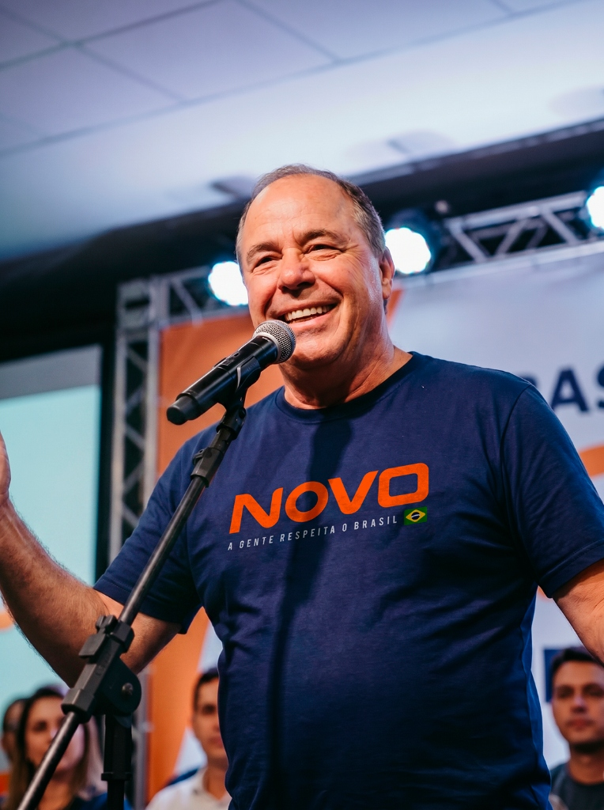

3
Mandatos
Presidente da Associação Comercial do Rio de Janeiro

Empresário, engenheiro civil e pré-candidato ao Senado pelo Rio de Janeiro. Uma trajetória construída no trabalho, na geração de empregos e no compromisso com resultados para o Rio e para o Brasil.
Mauro Campos é empresário e engenheiro civil, fundador do Grupo Aceplan, uma das mais respeitadas empresas de engenharia do Rio de Janeiro. Com mais de 45 anos de atuação, construiu uma trajetória marcada pela geração de empregos, pelo desenvolvimento regional e pela participação ativa na vida comunitária do estado.
Ao longo de décadas, liderou entidades empresariais e sindicais, participou de missões internacionais e defendeu os interesses do Rio de Janeiro sem nunca receber remuneração pública por sua atuação voluntária.
Mais proximidade com as 92 cidades do estado. Mauro Campos estará onde o Rio precisa: nos municípios, nas comunidades, no dia a dia das pessoas.
Representação firme dos trabalhadores, empreendedores e famílias que movem a economia fluminense e brasileira todos os dias.
Fim dos supersalários, mordomias e benesses que oneram o serviço público. Recursos públicos são do povo, não de privilégios políticos.
Gestão aberta, contas claras e prestação de contas permanente ao eleitor. Transparência não é opção — é obrigação de quem representa o povo.